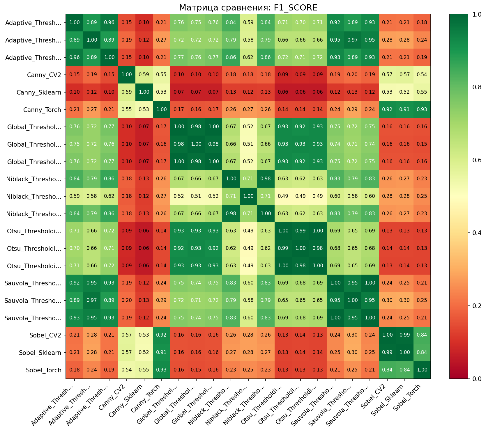
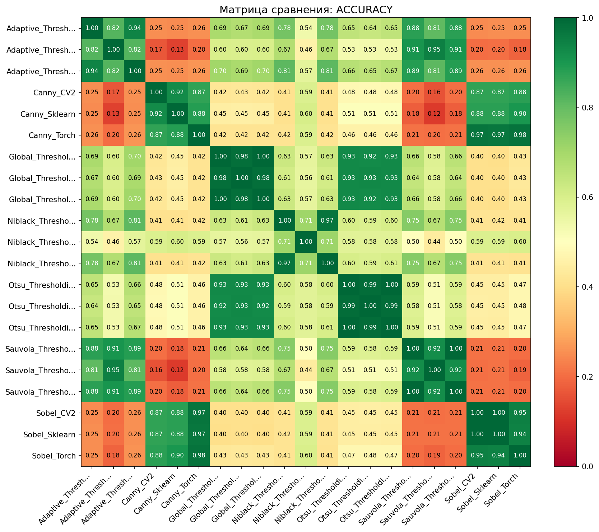
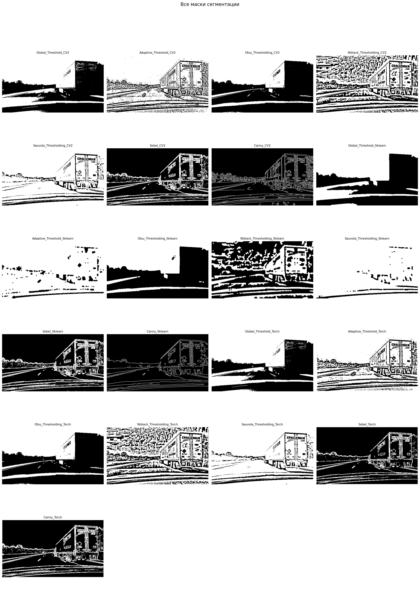

Дата: 2026-03-19 10:15:07
Всего методов: 21
Тип сравнения: all_vs_all
Референсный метод: Нет (все со всеми)



Сравнение всех со всеми
| Метод | Площадь маски | Покрытие | Время (с) |
|---|---|---|---|
| Sauvola_Thresholding_Sklearn | 121,742 | 93.9% | 0.012 |
| Adaptive_Threshold_Sklearn | 119,134 | 91.9% | 0.011 |
| Sauvola_Thresholding_Torch | 111,428 | 86.0% | 0.047 |
| Sauvola_Thresholding_CV2 | 111,415 | 86.0% | 0.001 |
| Adaptive_Threshold_CV2 | 98,873 | 76.3% | 0.000 |
| Adaptive_Threshold_Torch | 98,343 | 75.9% | 0.001 |
| Niblack_Thresholding_Torch | 78,874 | 60.9% | 0.046 |
| Niblack_Thresholding_CV2 | 78,834 | 60.8% | 0.001 |
| Global_Threshold_CV2 | 67,813 | 52.3% | 0.000 |
| Global_Threshold_Torch | 67,813 | 52.3% | 0.004 |
| Global_Threshold_Sklearn | 67,273 | 51.9% | 0.010 |
| Otsu_Thresholding_Torch | 58,700 | 45.3% | 0.001 |
| Otsu_Thresholding_Sklearn | 58,633 | 45.2% | 0.010 |
| Otsu_Thresholding_CV2 | 58,579 | 45.2% | 0.000 |
| Niblack_Thresholding_Sklearn | 49,254 | 38.0% | 0.012 |
| Sobel_Sklearn | 24,476 | 18.9% | 0.002 |
| Sobel_CV2 | 24,110 | 18.6% | 0.001 |
| Canny_Torch | 23,073 | 17.8% | 0.001 |
| Sobel_Torch | 19,869 | 15.3% | 0.001 |
| Canny_CV2 | 15,059 | 11.6% | 0.000 |
| Canny_Sklearn | 9,154 | 7.1% | 0.004 |